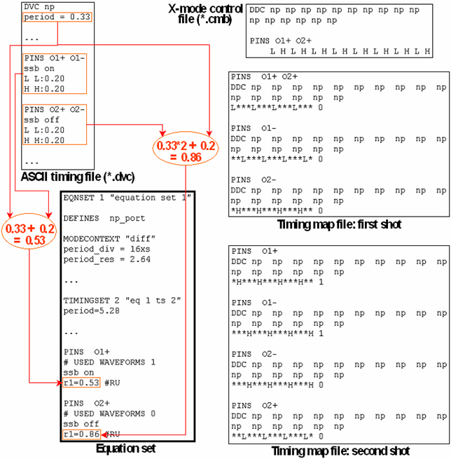

Defining the Clock for Fast Differential Receive Pins: ssb on/off
In NP applications with fast differential output pins, you can select whether the retiming clock of the test system or the DUT clock (source synchronous mode) is to be used for the decomposition of the differential output signal. This is done by adding the
ssb (on|off)
statement to the entry for the respective output pins in the timing set. ssb on selects the DUT clock, ssb off selects the AMC2 clock. In the ASCII interface you can add these statements to any timing record for differential pins in the ASCII timing file.
You must add ssb on or ssb off to a timing record for differential output pins if the ASCII device cycle in question is connected to a pattern with an x-mode factor of 12 or 16 in the global configuration file (NP3G-XS). In this case, you must also define two shots (see Using Shots: the shots Column) for the pattern if you want to perform a complete functional test. Furthermore, you will usually associate such a pattern with a port containing only the fast differential pins; for the single-ended pins, which are contained in a separate port, another pattern will be defined; both these patterns will be run in parallel in a multi-port burst.
The timing translation of the ASCII interface processes ssb on or ssb off for an x-mode factor of 12 or 16 as follows:
- It copies the statement into the two timing sets for the two shots (this is also done for x-modes ≤ 10).
- It determines the edge delay for the receive pins in the second shot.
The delay is calculated as follows:
- For ssb on
ascii_period + dvc_delay
(where ascii_period is the period length, and dvc_delay is the delay specified in the ASCII timing file)
- For ssb off
ascii_period * 2 + dvc_delay
- For ssb on
- It creates the appropriate wavetable and timing map files for the respective option, on or off.
The following figure shows an example with an x-mode factor 16 and two differential receive pins, one with option on, and the other with option off:
